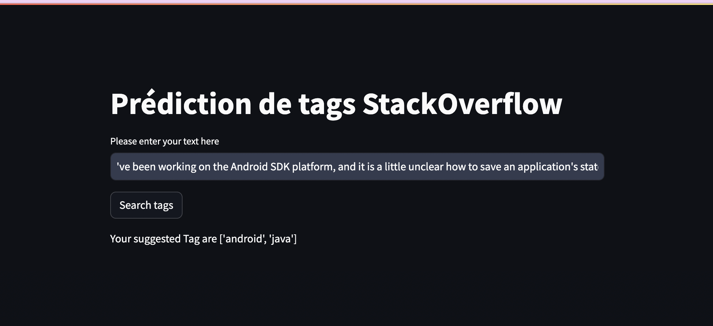
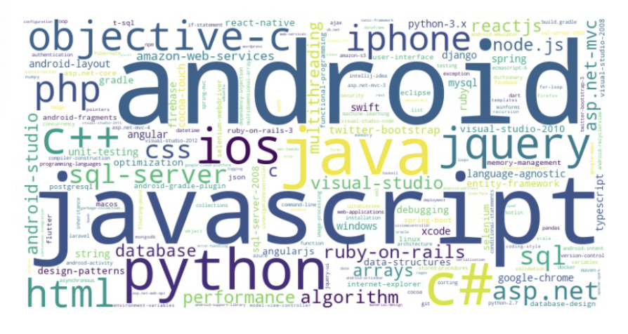
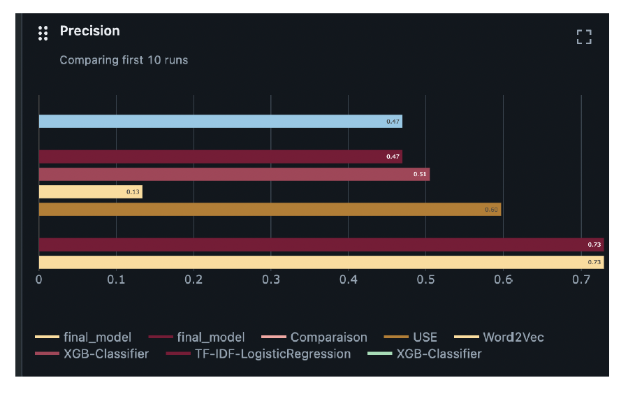

Présentation du projet
Ce projet vise à développer un modèle d'analyse de sentiment capable d'évaluer les opinions des utilisateurs sur Twitter.
L'objectif est de classifier les tweets en sentiments positifs, négatifs ou neutres, offrant ainsi une vue d'ensemble des tendances sur la plateforme.
Objectifs
- Collecte des données : Récupération d'un ensemble de questions en utilisant l'API de StackOverflow.
- Prétraitement des données textuelles : Nettoyage des questions, y compris l'élimination des mentions, hashtags et caractères spéciaux.
- Exploration de différentes approches : Test de plusieurs modèles de machine learning pour attribuer des tags aux questions.
- Évaluation des performances : Analyse des résultats obtenus pour identifier le modèle le plus performant.
- Visualisation des résultats : Création d'une application qui est déplyée sur Azure.
Aperçu des Résultats


